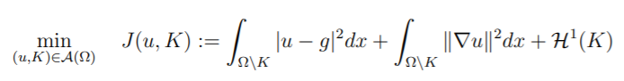

La vision par ordinateur a connu une grande révolution ces deniers, surtout dans le domaine médical, aujourd'hui multiples innovations ont été inventé en intelligence articificielle dont le but d'aider les médecins et de facilité leurs taches quotidienne comme la detection, la segmentation des organes et de prendre les décision.
Ce tavail consiste a ségmenter facilement la vesicule, en combinant l'algorithme de
"active contour et Mumford-Shah"
La base de données est devisé en deux parties :
-Image echographique de la vesiule
-Fichier csv contetnant les coordonnées du contour initial de la vesicule et les coordonées du centre de la vesicule
Resultat aprés le mappage des données
Le principe de Ambrosio Tortorelli est d'approcher l'énergie originale de Mumford-Shah par une séquence de problèmes variationnels elliptiques plus simples.

Remplacer l'ensemble d'arêtes Su au moyen d'une fonction 2D z et disignabt l'énergie dite du champ de phase comme suit :
Lorsque epsilon ->0 la fonctionalité L s'approche de la longueur de Su, c'est-à-dire H1 (Su).
Cette approximation ne fonctionne bien que si l'échelle de ε est de l'ordre de la taille de la grille de pixels.
Aprés l'obtention d'une image bien lisse nous allos appliquer la foncction du contour active qui permet de segmenter la vesicule.
Tout d'abord nous allons utiliser le contour initial qu'on a mapper à partir des fichiers CSV et d'utiliser la fonction du contour active de la bibliothéque Scikit-image de Python.
La fonction du contour active dépend de 3 parametres initiaux : alpha ,beta et gamma.
| Alpha | Paramètre de forme de longueur de serpent. Des valeurs plus élevées accélèrent le contrat du serpent. |
| Betta | Paramètre de forme de douceur du serpent. Des valeurs plus élevées rendent le serpent plus lisse. |
| Gamma | Paramètre de pas de temps explicite. |
ces 3 parametres minimisent une énergie qui est en partie définie par l’image et en partie par la forme de la spline: longueur et lissage. La minimisation se fait implicitement dans l'énergie de la forme et explicitement dans l'énergie de l'image.
Sample text. Click to select the text box. Click again or double click to start editing the text.
La partie évaluation consiste à comparer le résultat obtenu avec la vérité terrain.
j'ai utilsé une fonction qui permet de calculer le nombre de pixel qui se ressemble dans les deux images(image resultante et verité terrain) et calculer aprés la fonction Dice.
Dice = (2*A intersection A) /(A union B)
| Image 1 | 0.880128 |
| Image 2 | 0.808208 |
| Image 3 | 0.665424 |
Tableau de coeffesion Dice
Contour active gave an acceptable result even if the bad quality of ultrasound images.
Mumford Shah smoothes very well the images which simplify the process of detection of the vesicle.
Mumford Shah perform the results of contour active comparing to other filters (gaussian Blur)
As perspective we want to use this method on another data set, and generalize it to detect other organs.
created with
Website Builder Software .